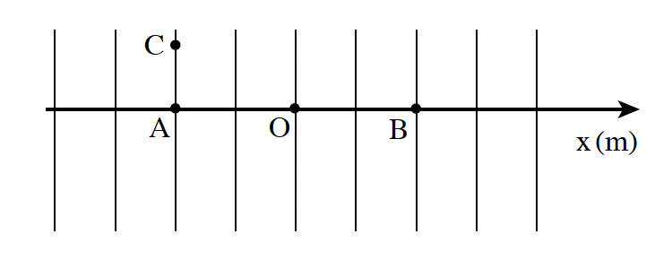

שאלה 1
התרשים שלפניכם מתאר חתך של משטחים שווי פוטנציאל באזור שבו שורר שדה חשמלי אחיד.
נתונות שלוש נקודות, A, B, ו-C.
נקודות A ו-B נמצאות על ציר ה-x שראשיתו בנקודה O (ראה תרשים).

נתון: xA = -0.8m , xB = +0.8m , xC = -0.8m.
הפוטנציאל החשמלי בנקודה A הוא VA = -0.45V.
והפוטנציאל החשמלי בנקודה B הוא VB = -0.90V.
הפרש הפוטנציאלים בין נקודה M לנקודה N מוגדר כך: VM - VN.
חשבו את הפרש הפוטנציאלים:
בין נקודה B לנקודה A.
בין נקודה C לנקודה A.
בין נקודה B לנקודה C.
(10 נקודות)
הקשר בין עוצמת שדה חשמלי אחיד לבין הפרש הפוטנציאלים בין שתי נקודות הנמצאות בתוכו מוגדר כך: E = - ΔV / Δx
ציינו את כיוון השדה החשמלי באזור המתואר. נמקו.
חשבו את עוצמת השדה החשמלי באזור המתואר.
(10 נקודות)
ברגע t = 0 משחררים חלקיק טעון שהוחזק במנוחה בראשית הציר.
החלקיק נע בכיוון החיובי של ציר ה-x.
קבעו אם מטען החלקיק הוא חיובי או שלילי. נמקו את קביעתכם. (5 נקודות)
נתון שגודל המטען של החלקיק q = 2 · 10-12C.
חשבו את עבודת השדה על החלקיק במעבר מנקודה A לנקודה B. (8.33 נקודות)